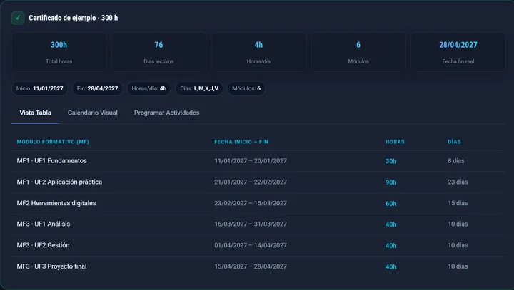

Temporalización de un certificado de profesionalidad
Cómo repartir las horas de cada módulo en el calendario, en 6 pasos y con un ejemplo resuelto.
Antes de empezar necesitas
- Estructura del certificadoMódulos, unidades formativas y horas (real decreto o ficha del SEPE)
- Fecha de inicioEl primer día de clase
- Días y horarioPor ejemplo, L–V de 16:00 a 20:00
- FestivosNacionales, autonómicos y locales del municipio
- LímitesFecha tope y horas diarias que marque la convocatoria
El método en 6 pasos
- Ordena las unidadesEn el orden de impartición. Algunos certificados exigen dar una unidad formativa antes que otra.
- Calcula los díasHoras totales ÷ horas al día = días de clase necesarios.
- Monta el calendarioDesde la fecha de inicio, solo días de clase: sin fines de semana ni festivos.
- Reparte en ordenLlena cada día con la unidad que toca. Si una termina a mitad de jornada, la siguiente empieza ese mismo día.
- Reserva la evaluaciónLa prueba final de cada módulo va dentro de sus horas, al final del módulo.
- CompruebaLas horas cuadran con el certificado y no te pasas de la fecha tope.
Las prácticas en empresa (módulo MP) no van en el calendario del aula: se planifican aparte, con el horario de la empresa.
Ejemplo resuelto
300 h ÷ 4 h = 75 días de clase → termina el 27 de abril
Ver las fechas exactas de cada unidad
| Unidad | Horas | Empieza | Termina |
|---|---|---|---|
| MF1 · UF1 | 30 | Lun 11/01 | Mié 20/01, 18:00 |
| MF1 · UF2 | 90 | Mié 20/01, 18:00 | Vie 19/02 |
| MF2 | 60 | Lun 22/02 | Vie 12/03 |
| MF3 · UF1 | 40 | Lun 15/03 | Mar 30/03 |
| MF3 · UF2 | 40 | Mié 31/03 | Mar 13/04 |
| MF3 · UF3 | 40 | Mié 14/04 | Mar 27/04 |
| Total | 300 | 11/01/2027 | 27/04/2027 |
Las horas del ejemplo son ilustrativas, no corresponden a un certificado real.
Errores frecuentes
- Olvidar festivos localesCada municipio tiene dos, y en Canarias hay también insulares.
- Redondear días30 h a 4 h/día son 7,5 días, no 8.
- Saltarse la secuenciaDar una unidad antes de la que el certificado exige.
- Dejar fuera la evaluaciónY no tener dónde encajar la prueba final.
- Rehacerlo a manoCada cambio de calendario obliga a recalcular todo lo que viene detrás.
Hazlo en un minuto
El planificador lee el PDF del certificado y genera el cronograma con los festivos nacionales y de Canarias. Gratis y sin registro.
Abrir el planificadorEmpieza cada módulo en una jornada nueva: con este ejemplo, termina el 28 de abril.

Nueva ley de FP. Con la Ley Orgánica 3/2022, los certificados pasan a ser ofertas de grado C y parte de la terminología cambia. El método de temporalización es el mismo. Consulta siempre las instrucciones vigentes de tu servicio de empleo.
Deja de temporalizar a mano
Sube el PDF de tu certificado y obtén el cronograma completo, con los festivos ya descontados.